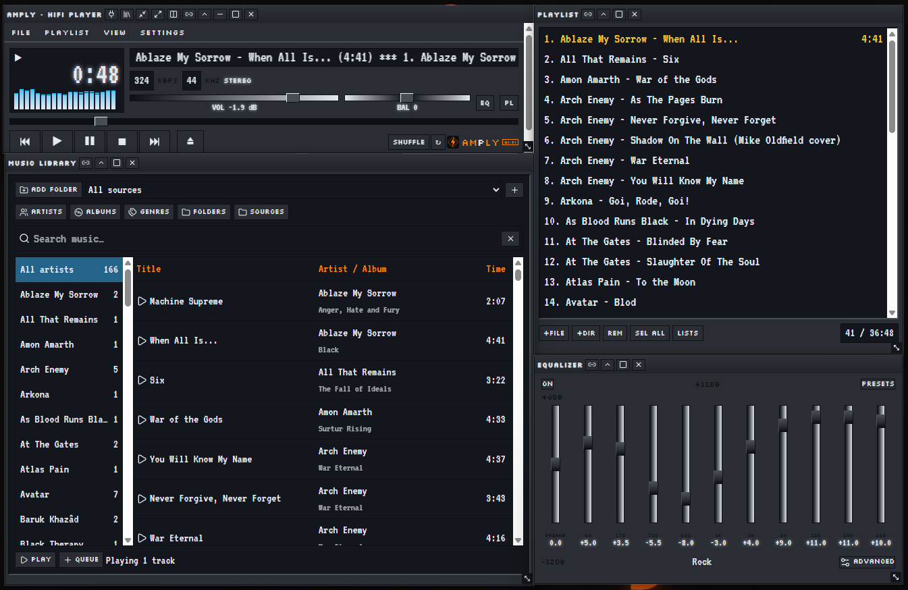
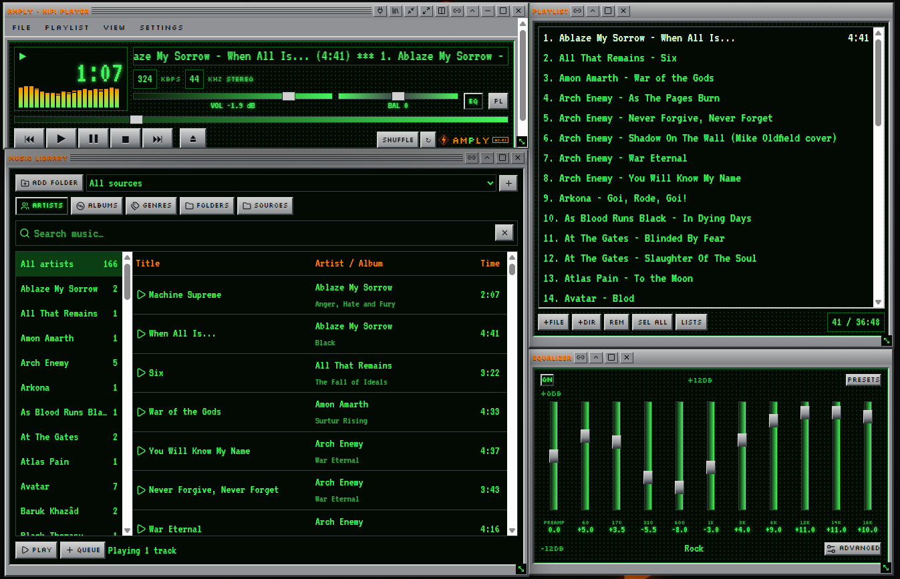
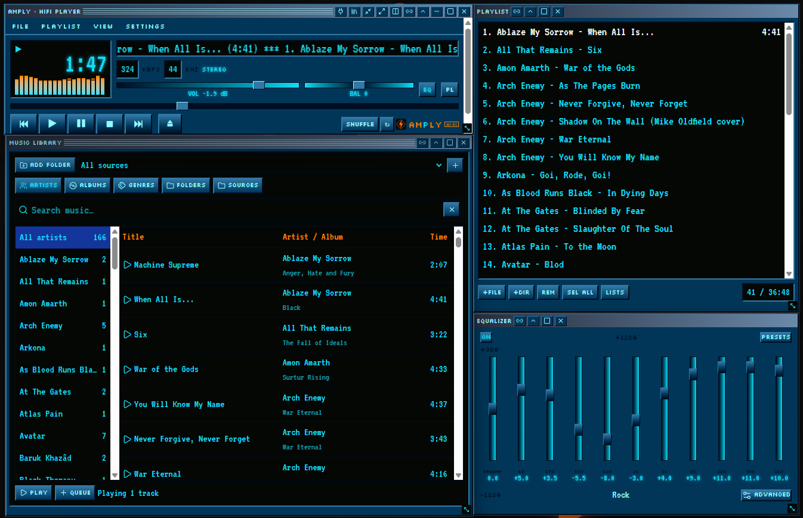
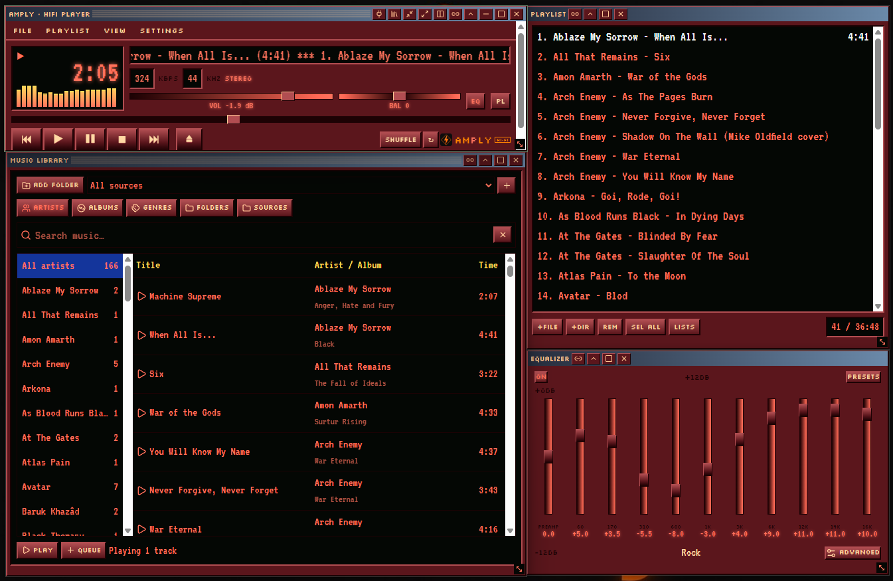
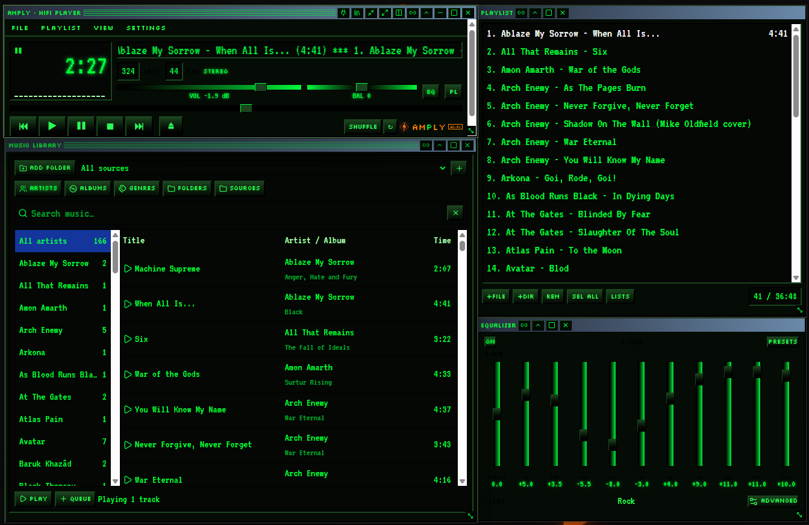

A reverse-engineered tribute to the classic Winamp 2 — because it really whipped the Llama's ass.
Free · Public source code · Works offline · Windows & Debian Linux
amply_3.0.0_amd64.deb in Downloads. If you brought it on a USB stick, copy it into Downloads first..deb file and choose Install if a software installer opens. Enter your account password when asked. Internet may be needed for missing system packages.sudo apt install ./amply_3.0.0_amd64.deb and press Enter. Type your password (nothing appears as you type) and confirm if asked.amply in a terminal. Press Power on or Skip. Do not start the player with sudo.amply in a terminal and send the error text and your Debian version through Contact me. More help is in the Linux setup guide on GitHub.



